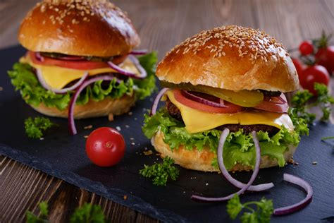

Tap Wagyo Burger

For the lovers of homemade burger, here is a easy recipe that
anyone can prepare at home with simple ingredients that you
can find on groceries close to your home.
Fr this recipe will be use 1kg of meat, what's blend 65%
meat and 25% of fat. This blend you'll be able to prepare
the burger in the plate or on the grill.
Let's do it!
- 1kg of fresh meat
- 750g of knuckle: I like to use knuckle, as it's low fat meat, than
I can add just pure fat or a high fat meat, like
brisket or ribs.
- 250g of fat: Pay attention on the meat
fat percentage to not add to much meat and reduce the fat %!
- Fresh tomatoes
- Pickles
- Chedder chesse
- Crispy lettuce
- Onion if you prefer
- Homemade mayonese
- Burger buns
Directions
-
Burger patties:
- First thing first, miced the
the meat using a ground machine or ask you butcher to miced for
you.
-
After you get all your meat miced, it's time to blend very
well all together.
- Prepare the patties ball (better use a scale), I like to
prepare patties with 150 - 170 g each, with this weight
it's possible to adjust to point of the meat, middle well,
well done, etc, according to your guesses tasty.
- Now with all the patties balls ready, it's time to modeling
the patties, if you have a 11cm form will be esiers, other wise,
you can just modeling with your hands till get a thump finger
thickness.
- Cut the buns in half and reserv
- Cut the tomatoes in slices, not to thin and not to thicker
- If you prefer cut the onios in slices as well
- Arrange the pickles, in case it's not cuted, slices them thiner.